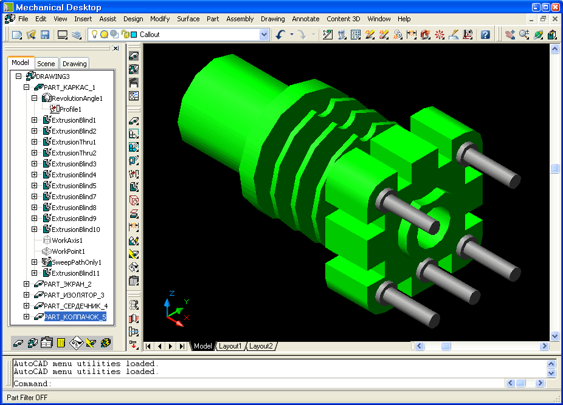

|
| От концепции к законченной конструкции |
|
Приложение Mechanical Desktop представляет собой полнофункциональную систему объемного моделирования и автоматизации проектирования машиностроительных изделий, которая призвана помочь конструктору на всех стадиях трудного пути от концепции нового изделия к законченной конструкции. Используя функции управления иерархией деталей в сложной конструкции, эта система помогает отслеживать все изменения, вносимые в отдельные детали, и формировать согласованный комплект конструкторских документов.
Как правило, первым этапом работы над новой конструкцией является создание двухмерных эскизных чертежей в среде AutoCAD. Следующая стадия - трехмерное моделирование конструкции и построение ее адекватной объемной (твердотельной) модели - выполняется в среде Mechanical Desktop.
Назначение приложения Mechanical Desktop можно сформулировать следующим образом.
- Дать конструктору полноценное объемное представление о форме и функциях проектируемого изделия.
- Помочь согласовать форму и размеры всех деталей собранного изделия.
- Предоставить в распоряжение специалистов по маркетингу и работе с потребителями полноценную информацию о предполагаемом изделии, обеспечив им возможность продвигать его на рынок. Никакие двухмерные чертежи не дают такого полного представления о проектируемом изделии, как объемная картинка, сформированная после тонирования созданной в среде Mechanical Desktop объемной модели изделия.
- Подготовить данные для анализа качества проектируемого изделия современными инженерными методами - анализа напряжений, аэро- или гидродинамики формы и т.п.
- Предоставить исходные данные для подготовки специализированного инструмента и оснастки, необходимых для производства изделия, - пресс-форм, литейных форм, программ для металлорежущих станков с ЧПУ.
С помощью приложения Mechanical Desktop форму сконструированного изделия можно оценить либо по тонированному изображению его объемной модели, либо по созданному с помощью технологии стереолитографии объемному макету изделия. В последнем случае используется создаваемый программой Mechanical Desktop файл трехмерного описания формы изделия, который передается непосредственно на технологическую установку для стереолитографии.

Встроенные в Mechanical Desktop средства анализа и оценки качества проектируемого изделия позволяют избежать затрат на изготовление реальных образцов и проведение соответствующих натурных испытаний по крайней мере на стадии предварительного отбора вариантов конструкции. Программы анализа распределения напряжений и деформаций позволяют еще на стадии моделирования прогнозировать поведение конструкции при разных условиях, в том числе и температурных, подбирать материал для изготовления.
Результаты моделирования можно преобразовать в документы разного вида.
- Двумерные конструкторские чертежи деталей.
- Сборочные чертежи.
- Ведомость деталей и сборочных единиц Изделия (при желании в формате листа электронной таблицы Microsoft Excel).
Таким образом, можно сформировать полный комплект конструкторской документации, необходимый для запуска спроектированного изделия в производство, - и все это в знакомой среде AutoCAD.
Одно из главных преимуществ сформированных таким способом конструкторских документов - их полная совместимость с AutoCAD, что позволяет в дальнейшем организовать их поддержку и сопровождение в этой распространенной среде автоматизации проектирования.
Mechanical Desktop автоматизирует процесс создания и редактирования, чертежей, используя параметрическую геометрию, которая контролирует
зависимости между конструируемыми элементами и автоматически модифицирует модели, если они были изменены.
Эскиз (набросок) (sketch) – основной элемент, который определяет приблизительный размер и форму детали (part). Для управления поведением эскиза
используются размеры (dimensions) и ограничения (constraints). В любой точке, можно изменять набросок, и параметрическая геометрия сохраняет
зависимости среди модулей.
Ограничение (constraint). Определяет, как эскиз может изменять форму или размер. Геометрические ограничения управляют формой эскиза и
зависимостями между его отрезками и дугами. Размерные ограничения управляют геометрическими размерами эскиза.
Размерные ограничения (dimensional constraint). Параметрический размер, который управляет размерами эскиза. Размер может быть задан как постоянное
значение, уравнение с использованием переменных, или получен из файла.
Геометрические ограничения (geometric constraint) Управляет формой и отношениями геометрических элементов в эскизе.
Степень свободы (degree of freedom – DOF) Определяет, как эскиз может изменять форму или размер. Ограничения уменьшают количество степеней
свободы.
Вспомогательные элементы (feature) Элементы, объединяемые с другими для формирования и модификации отдельных деталей, эскизов. Вспомогательные
элементы эскиза образуются из отрезков полилиний и дуг. Вставляемые вспомогательные элементы это обычные механические формы: отверстия, скругления,
фаски и пр.
Фиксированная точка (fixed point). Служит точкой отсчета для эскиза. Она все время остается неподвижной в пространстве при изменении размеров
эскиза, в то время как остальные точки при этом перемещаются относительно неё.
Эскиз пути (path sketch). Эскиз с ограничениями, который является траекторией для развертки (swept feature).
Эскиз (sketch). Плоский набор точек, отрезков, дуг, и полилиний, используемый для формирования профиля.
Основной элемент (base feature) Первый созданный элемент детали. Геометрия всех остальных элементов зависит от основного.
Поверхность эскиза (sketch plane) Бесконечная плоскость в которой создается эскиз, и помещаются вспомогательные элементы.
Рабочие вспомогательные элементы (work feature) Оси (work axes), точки (work points), плоскостьи (work plane). Используются для создания других
элементов.
Эскизные вспомогательные элементы (sketched feature) Трехмерные фигуры, форма которых определяется эскизом, параметрически задающие элементы
детали. Это extrude, lofte, revolve, swept и face split.
Помещаемые вспомогательные элементы (placed feature) Трёхмерные фигуры AMD, форма которых не требует предварительного определения эскиза. Это
такие элементы как hole, chamfer или fillet.
|